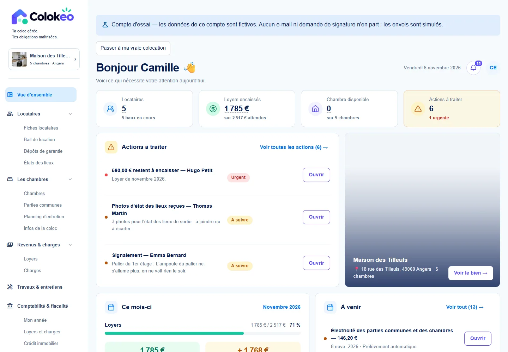

Évitez la ressaisie
Importez vos pièces et validez les informations proposées pour compléter vos dossiers.
POUR LES BAILLEURS EN COLOCATION ET EN LOCATION MEUBLÉE
Gagnez du temps, sécurisez votre conformité juridique et fiscale et gardez l’esprit tranquille, même en cas de pépin.
Colokéo automatise les tâches répétitives, vous montre ce qui reste à faire et vous aide à garder vos dossiers juridiques et fiscaux à jour. En cas de pépin, vous retrouvez les bons justificatifs au même endroit.
Colokéo se pilote sur ordinateur. Sur téléphone, chacun a son portail : bailleur ou locataire.
Découvrez le produit avec la Maison des Tilleuls, une colocation fictive de cinq chambres.

CE QUE VOUS GAGNEZ
Importez vos pièces et validez les informations proposées pour compléter vos dossiers.
Repérez un loyer partiel, une pièce manquante ou une échéance à traiter.
Retrouvez le bail, les garanties, les paiements et l’historique du dossier.
VISITE DU PRODUIT
Voyez les loyers encaissés, les chambres occupées et les actions à traiter.
Voir les écrans →De l’arrivée au départ, gardez les informations et les pièces dans le bon dossier.
Voir les écrans →Suivez le bien chambre par chambre, et gardez une trace de ce qui se passe dans les espaces partagés.
Voir les écrans →Retrouvez les montants attendus, les versements et ce qu’il reste à encaisser.
Voir les écrans →Retrouvez les documents rattachés à votre bien et aux dossiers locataires.
Voir les écrans →Rassemblez les données de gestion qui servent à préparer votre déclaration.
Voir les écrans →Gérez les accès et les échanges depuis votre espace propriétaire.
Voir les écrans →AVANT D’ESSAYER
Oui, si vous gérez vous-même votre colocation meublée. Vous suivez les occupants, les baux, les loyers et les pièces par chambre depuis un seul tableau de bord. Colokéo prend en charge les baux individuels et les baux communs.
Vous voyez qui a payé, quelles pièces sont à vérifier et ce qui demande votre attention. Colokéo vous aide à reprendre les informations de vos documents et à préparer vos quittances, sans repartir de zéro à chaque fois. Voir les cas pratiques.
Vous pouvez importer vos baux signés et les rattacher aux dossiers de vos locataires. Vous complétez les informations dont vous avez besoin pour commencer à suivre votre gestion.
Vous pilotez votre colocation sur ordinateur. Sur téléphone, votre portail bailleur vous permet notamment de consulter les loyers, traiter un signalement ou ajouter une dépense avec son justificatif. Vos locataires ont leur propre portail pour retrouver leurs documents et vous signaler un problème. Voir les deux portails.
Vous retrouvez le bail, la garantie, les paiements et les justificatifs du dossier. Pour un impayé, vous pouvez suivre les relances et préparer les pièces à transmettre. L’indemnisation reste soumise aux conditions de votre garantie. Voir le suivi des impayés et sinistres.
Vous pouvez rassembler les loyers, les dépenses et les justificatifs au fil de l’eau, puis préparer un dossier pour votre comptable. Colokéo prépare des éléments de déclaration à vérifier avant dépôt. Voir la préparation fiscale.
À l’inscription, choisissez « Utiliser un jeu de données fictives ». Vous découvrirez une colocation de cinq chambres avec des dossiers déjà renseignés. Les envois de gestion et les demandes de signature sont simulés dans la démo. Essayer avec des données fictives.
À l’inscription, choisissez le jeu de données fictives pour explorer une colocation déjà renseignée.